Physics paper 3
Question 1
You are provided with the following:
Some water in a container A 10 ml measuring cylinder A piece of a glass rod A 10 g mass 5 paper clips A half metre rule A metre rule Two stands, two bosses and two clamps Three pieces of sewing thread
Proceed as follows:
(a) Pour 6 ml of the water into the measuring cylinder. Lower the glass rod into the water and determine the volume V of the glass rod.
V=............................cm3(1 mark)
Remove the glass rod from water.
(b) Using a stand and a piece of string, suspend the half metre rule at its centre of gravity C so that it balances horizontally with the scale facing you.
Using a second stand, clamp a metre rule vertically near one end of the half metre rule to note the height at which the half metre rule is horizontal.
Maintain this height throughout the experiment
Record the centimetre mark of the centre of gravity C.
C........................cm(1 mark)
(c) Using the string, suspend the 10 g mass on the half metre rule at a distance
d = 2 cm from C. The distance d = 2 cm should be maintained throughout the experiment.
Balance the half metre rule by suspending the glass rod using a string at a distance X from C.
Record the value of X
X=.........................cm(1 mark)
(d) Using the results in part (a) and (c) determine the;
(i) mass of the glass rod, (2 marks)
(ii) density of the glass rod. (2 marks)
(e) Remove the glass rod. Push the half metre rule through one paper clip and adjust the position of the clip to a point P where the half metre rule balances horizontally. See Figure 1.
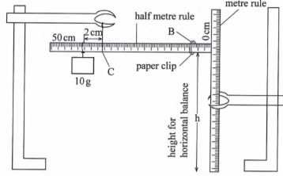
(f) Record the centimetre mark for point P in Table 1.
(g) Repeat part (f) for the other number of clips shown in Table 1 and complete (the clips may be suspended by connecting them us a chain of the required number) (4 marks)
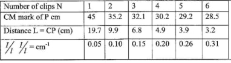
(h) Plot a graph of l/L(y axis) against the number of clips N.(4 marks)
(i) Determine the slope S of the graph.(3 marks)
(j) Determine K given that 1/L = 0.05 KN(2 marks)
Question 2
(i) A voltmeter
(ii) A resistor labelled 10 1
(iii) A resistance wire mounted on a half metre rule labelled X
(iv) Two cells in a cell holder
(v) A switch
(vi) Eight connecting wires
(vii) A micrometer screw gauge
(viii) A resistor labelled 10 KB
(ix) A galvanometer
(x) A beaker containing a liquid labelled L
(xi) Two copper plates
(xii) A resistance wire labelled AB and mounted on a millimetre scale
(xiii) A jockey
(xiv) A vernier calliper Proceed as follows:
Part A
(a) Measure and record the diameter d of the resistance wire x
d= ...............mm
=.................m
(b) Set up the circuit as shown in Figure 2.
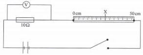
(i) Close the switch and record the potential difference V across the 10a resistor. (1 mark)
(ii) Open the switch. Determine the current I flowing in the circuit. (2 marks)
(c) (i) Now connect the voltmeter across wire X. Close the switch and record the potential difference V2 across wire X.
v1.............................
(ii) Determine the resistance R of wire X.(2 marks)
(iii) Determine K the resistance per metre of wire X.(1 marks)
(iv) Determine Q given that Q = n Kd2/4 (where d is in metres).(1 marks)
Part B
(d) (i) Using the vernier callipers measure and record the width W of one of the copper plates
W =............(1 mark)
(ii) Determine the area A of a 5 cm length of the copper plate
A =......................... .. cm2(1 mark)
(e) Using stands and clamps, hold the copper plates in the beaker such that both plates:
(i) reach the bottom of the beaker;
(ii) are parallel, vertical and facing each other;
(iii) are separated from each other by a distance S.
(f) Connect the copper plates to the circuit as shown in Figure 3.
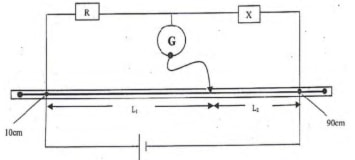
(g) Set the separation distance between the copper plates S to 3 cm. Using the jockey tap wire AB at various points to obtain a point P at which the galvanometer does not show any deflection. Record the balance length L (from A to P) in Table 2.
(h) Repeat part (g) for other values of S shown in Table 2 and complete the table. (6 marks)
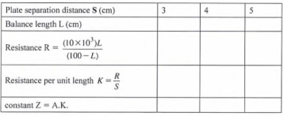
(i) Determine the average value of Z. (2 marks)
V=3.4 cmcm3± 0.2(1 mark)
C = 25.3 cm ± 0.1
CX = 2.2 cm ± 0.1 cm(1 mark)
10 x 2 = mx 2.2
M =m/v 10 x 2/2.2
= 9.1g ± 1
ƿ =m/ v
9.1/3.4
=2.68 gcm -3
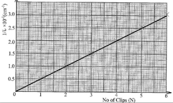
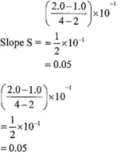
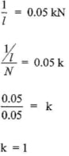
d=0.36mm۪.005
3.6X10-4M
V1= 1.7 V ± 0.2
(ii) Open the switch. Determine the current I flowing in the circuit.(2 marks)
R=V/1
=1/0.17
=5.88 ☊
V2=1.0v۪.2
v1K=5.88/0.5
11.76☊m-1
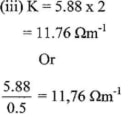
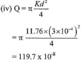
W =5.0cm± 0.10
A =5X50 cm2
=25.00cm2
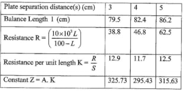
Z average = 325.73+295.43+315.63/3